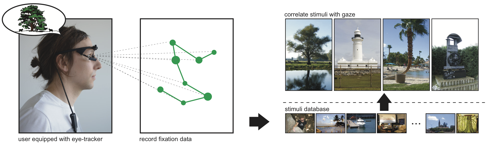

When people mentally imagine a photograph, their eyes move as if they were actually looking at that photo. We record eye movements while a photo is recalled from memory and introduce algorithms that can determine which photo is being imagined.

Abstract
Humans involuntarily move their eyes when retrieving an image from memory. This motion is often similar to actually observing the image. We suggest to exploit this behavior as a new modality in human computer interaction, using the motion of the eyes as a descriptor of the image. Interaction requires the user's eyes to be tracked but no voluntary physical activity. We perform a controlled experiment and develop matching techniques using machine learning to investigate if images can be discriminated based on the gaze patterns recorded while users merely think about image. Our results indicate that image retrieval is possible with an accuracy significantly above chance. We also show that this result generalizes to images not used during training of the classifier and extends to uncontrolled settings in a realistic scenario.

[pdf, 5.5 MB]
The Mental Image Revealed by Gaze Tracking
@inproceedings{Wang:2019,
author = {Wang, Xi and Ley, Andreas and Koch, Sebastian and Lindlbauer, David and Hays, James and Holmqvist, Kenneth and Alexa, Marc},
title = {The Mental Image Revealed by Gaze Tracking},
booktitle = {Proceedings of the 2019 CHI Conference on Human Factors in Computing Systems},
series = {CHI '19},
year = {2019},
isbn = {978-1-4503-5970-2},
location = {Glassgow, Scotland UK},
pages = {609:1--609:12},
articleno = {609},
numpages = {12},
url = {https://doi.org/10.1145/3290605.3300839},
doi = {10.1145/3290605.3300839},
acmid = {3300839},
publisher = {ACM},
address = {New York, NY, USA}
}
Slides [54 MB] of talk at CHI'19
Dataset
Image stimuli [12 MB zipped]
Raw samples [158 MB zipped]
Eye movement events [1.6 MB zipped]
Source code
Video Preview
Acknowledgments
We would like to thank Minjung Kim for narrating the video and all participants for joining our experiment.